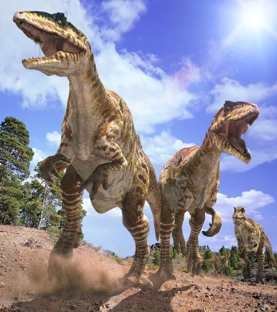
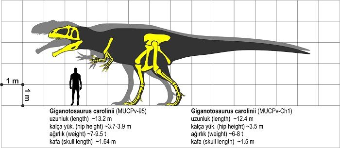

 Giganotosaurus es un género fósil de dinosaurio terópodo carcharodontosáurido. Que vivió hace aproximadamente entre 99 y 93 millones de años durante el cretácico tardío, los primeros fósiles fueron hallados en la Neuquén La Patagonia Argentina. Este temible depredador es conocido por uno de los más grandes dinosaurios carnívoros que hayan existido solo superado por el Tyrannosaurus
 Giganotosaurus está representado por dos especímenes, muy incompletos. Ahora, basándose en las actuales estimaciones se puede establecer mediante un simple cálculo que la longitud del cráneo del segundo espécimen, (como es de un 6,5% más grande que el holotipo) mediría entre 1,6 y 1,75 metros de longitud. El cráneo del Giganotosaurio tenía dientes curvos un poco anchos y aserrados de unos 20 cm de largo, aptos para desgarrar grandes trozos de carne. Estos dientes se reemplazaban a medida que se iban perdiendo. Por lo que se supone que realmente fue un depredador a diferencia de los abelisáuridos con los que convivía y que probablemente presentaban mas hábitos de carroñeros, aunque no se descarta la posibilidad de que comieran restos encontrados, si no tenían una buena cacería. Restos de Giganotosaurus demuestran ser más depredador que carroñero, ya que por su cuerpo es poderoso pero ligero.
Fue descubierto en 1993, no hace mucho tiempo, por Rubén Carolini, quién no fue un paleontólogo experto sino un mecánico con suerte, encontró los huesos de este dinosaurio casi por accidente. Sus huesos estaban enterrados superficialmente en el desierto casi a la vista, no se necesitó excavar mucho para encontrarlos. Fue encontrado en Sudamérica, para ser más exactos en la Patagonia en una zona que pertenece a la Formación Candeleros y que se cree se formo hace aproximadamente 95 millones de años durante el Cretácico superior. Se encontró un espécimen muy completo, casi el 70% de sus huesos fueron encontrados, incluyendo un gran cráneo y gran parte de su columna vertebral. Por estos hallazgos se cree que el Gigantosaurus medía 12 metros de largo y se cree que podía llegar a pesar hasta 7 toneladas. Lo mejor de este espécimen es que se encontró en muy buenas condiciones y por esto se ha podido estudiar a detalle y profundizar en sus costumbres y anatomía.